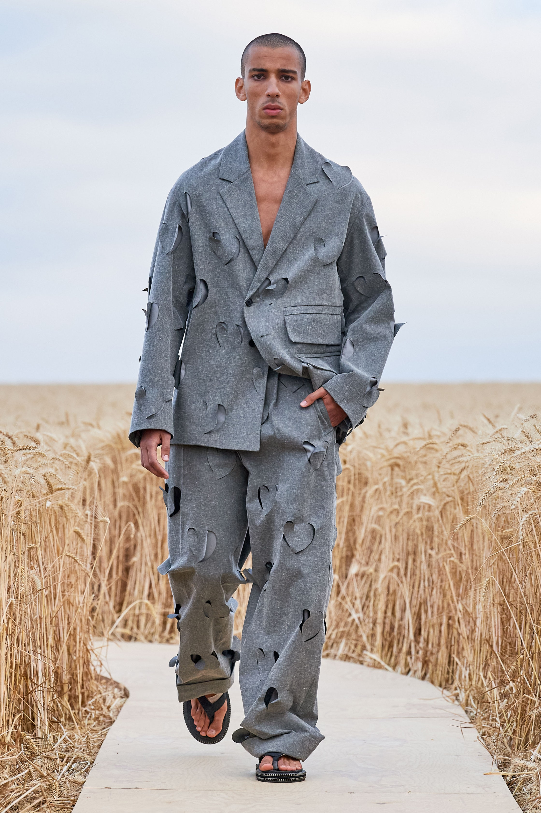
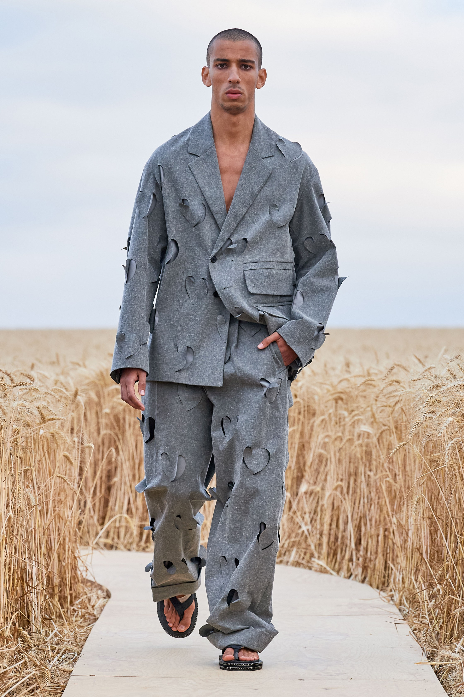

Jacquemus
"inclusivity of all"
Not only was Simon Porte Jacquemus eager to return to the runway; he wanted to get back to traveling.
In March, Porte Jacquemus had been in touch with the dancer Alexander Ekman, who came to the designer's studio on the eve of lockdown in France. Needless to say, everything changed at that point, but the reference remained. During a pre-show interview, Porte Jacquemus said he wanted his collection to talk of love and celebration, “like a simple country wedding or a harvest festival.” With everyone cocooning at home, he wanted to create something “bubble-like” to represent the moment.
Ultimately, he named the collection “L'Amour,” a declaration of love for his team, and sprinkled it with Provençal references such as ceramics, a poem by Miro, a corner of a grandmother’s tablecloth, and a colander of cherries.
The show may have taken place in the great outdoors, but the clothes nodded to what we have all been experiencing inside. “For me, the runway can't be a video. It's at the heart of what we do; it's not superficial. It's important to all of us to continue, just like a restaurant that reopens. It's like a movie of a summer day. It's our life.” Despite complicated logistics, visually this show was a masterstroke. It addressed all of the issues dominating the fashion conversation in 2020 in terms of diversity, inclusivity, and apparent authenticity. Presciently, Porte Jacquemus last year had dialed down to two shows per year. But a live runway, he noted, can never be replaced.


 
